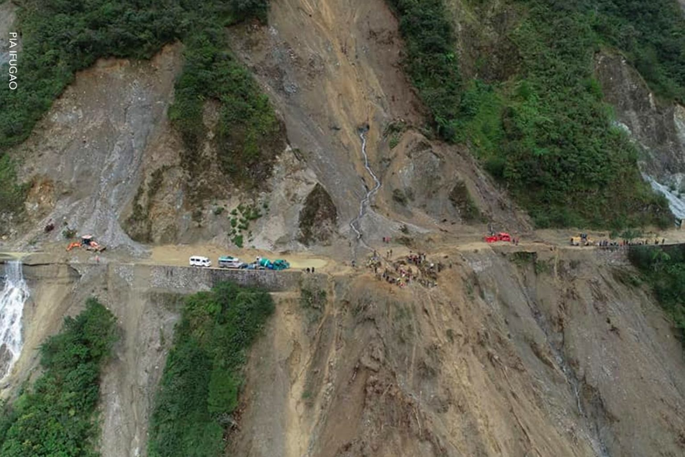

What to do??

Here are some precautions to take before, during, and after a landslide:
Before a Landslide
- Assess the soil before constructing your home or taking any property in a landslide-prone or hilly area.
- Make buildings away from the steep slopes, edge of mountains, drainage ways, or natural erosion valleys.
- Build embankments on the gradient slopes.
- Build retaining walls.
- Fit flexible gas pipes to avoid leakage.
- Buy insurance that covers the damage caused to your property for landslide damage.
- Implement land-use zoning cover in areas most vulnerable to landslides or other natural hazards.
- Prepare evacuation plans and an emergency supply kit containing all necessary items required during such hazards.
- Stay updated with the latest emergency information through radio alerts and television sources.
*
During a Landslide
- Evacuate the landslide susceptible place as early as possible.
- Carry necessary documents with you. Carry emergency medicine kit, dry food, and drinking water.
- Use alternate routes which have less landslide susceptibility to reach an evacuation shelter location.
- Use a battery-powered radio to follow the latest updates.
After a Landslide
- Clear gutters and downspouts to prevent water accumulation.
- Reinforce slopes with retaining walls or barriers, and ensure proper drainage to redirect water away from vulnerable areas.
Remember, landslides are natural disasters that can cause significant damage. It's important to stay informed and prepared to protect yourself and your property.